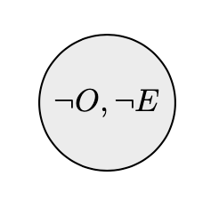
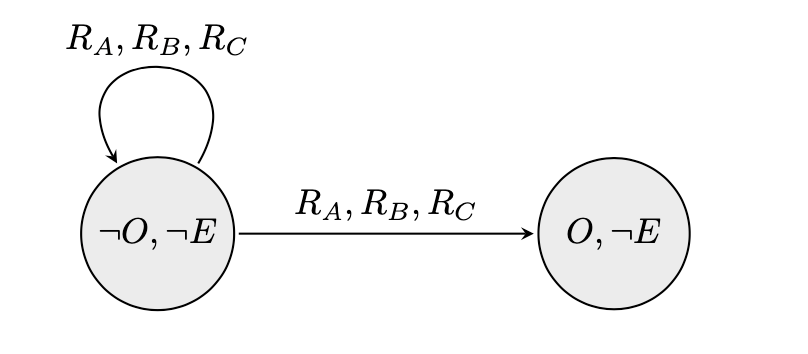
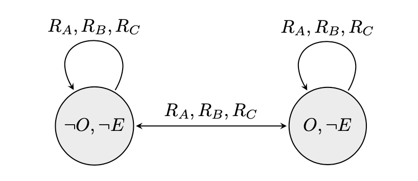
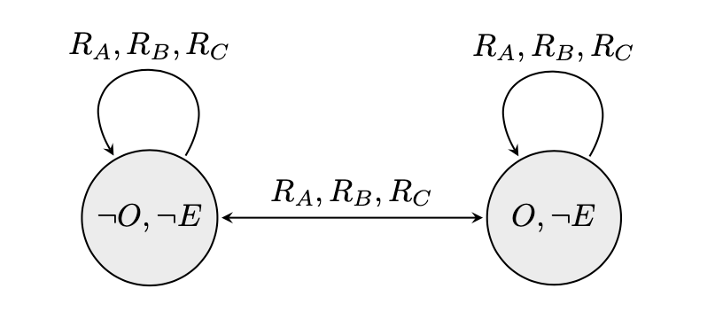
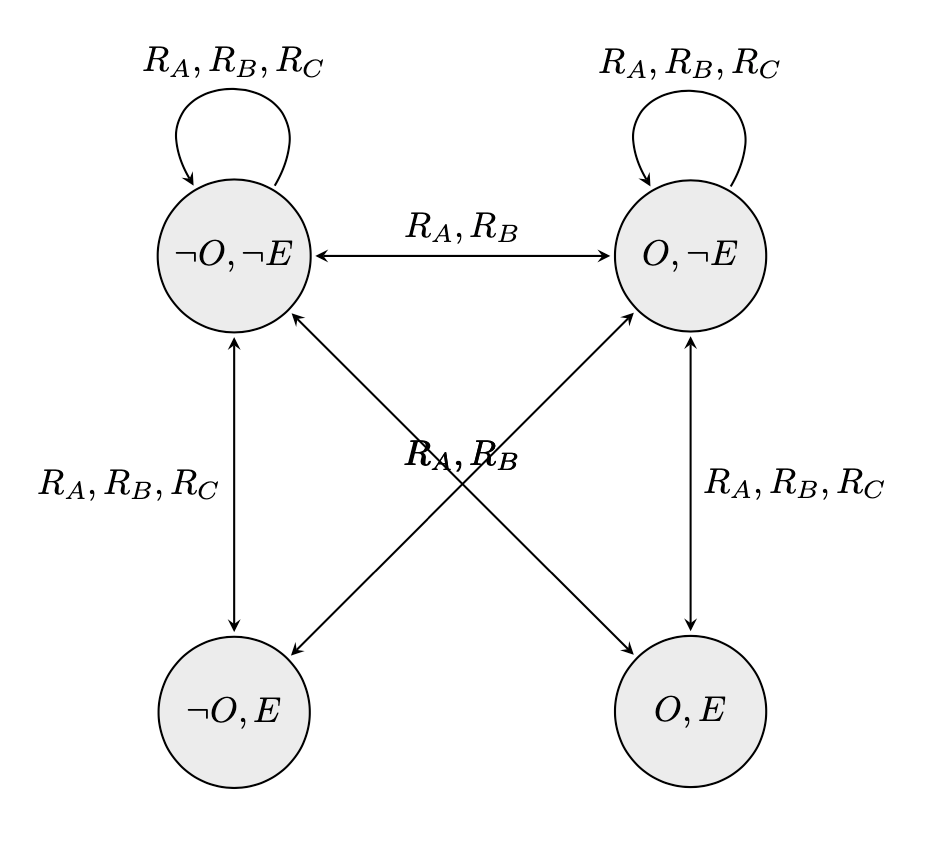
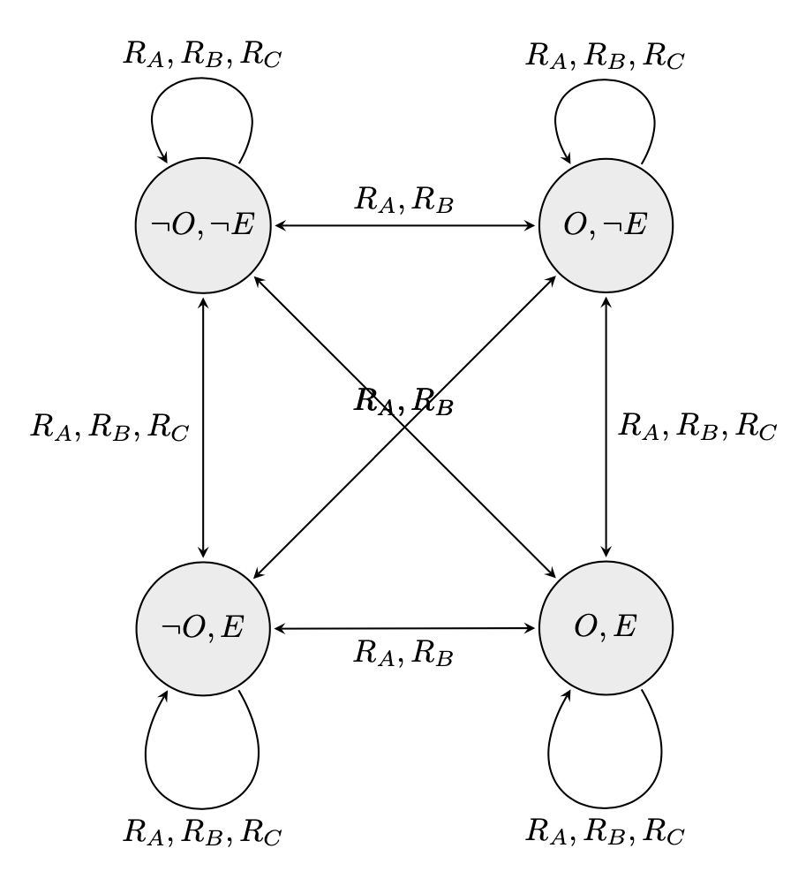

A group of 100 prisoners, all together in the prison dining area, are told that they will be all put in isolation cells and then will be interrogated one by one in a room containing a light with an on/off switch. The prisoners may communicate with one another by toggling the light switch (and that is the only way in which they can communicate). The light is initially switched off. There is no fixed order of interrogation, or interval between interrogations, and the same prisoner may be interrogated again at any stage. When interrogated, a prisoner can either do nothing, toggle the light switch, or announce that all the prisoners have been interrogated. If that announcement is true, the prisoners will (all) be set free, but if it is false, they will be in jail forever. While still in the dining room, before the prisoners go to their isolation cells (forever), can the prisoners agree on a protocol that will set them free? [1].
We will change the number of light bulbs into n amount for our variation. Therefore, there will be n amount of light bulbs available to switch on or off in our interrogation room. We will first explain why a protocol is needed to solve this problem. After this we will explain the steps [1] have taken to solve the problem for one light bulb after which we will increase the explanation for more light bulbs. We will need to build a Kripke model and examine the many states and actions to solve this problem. Another important assumption we adopt from [1] is that this question is not a trick question. Therefore, we only have logical solutions.
Initial riddle analysis
We need a protocol to solve the light bulb problem because the individual prisoners cannot identify when all prisoners have been interrogated. We can explain why we need protocols by modelling the prisoners’ knowledge and relations. Such that we can see what every prisoner thinks are the possible states after several days. We use the Kripke semantics. First, we must state the assumptions we are making in the riddle. These are:
All prisoners wish to escape
1 prisoner enters the room each day
The lightbulb's initial state is either off
O = lightbulbison
E = everybody has been interrogated
We consider the Kripke structure M=〈S, π, Ra, Rb, Rc〉 with S = {(¬O,¬E),(O,¬E),(¬O,E),(O,E)} and π, Ra, Rb, Rc as indicated in Figure Figures 1 - 5. In this Kripke model we show what states can be possible after the number of days increase. From this, we show in the Kripke model that it is not possible to deduce for one single prisoner to know when everybody has been interrogated. It is common knowledge to the prisoners that one prisoner enters the interrogation room per day, and when in the interrogation room the prisoner can either turn on or off the light bulb. If we take 3 prisoners: Alex (A), Bennie (B) and Charlie (C). Here is the progression of the Kripke model:

Fig.1 - Initial state of the model.
The initial state of the Kripke model in Figure 1 just contains the state in which the light bulb is turned off, and nobody considers it possible that everybody has been interrogated. In Figure 2 we can see that from the initial state in one step every agent considers it possible that either we are still in the same state or we have moved to the state in which the light bulb is now turned on. But because the number of days is lower than the amount of prisoners we can not consider it true that everybody has been interrogated.

Fig.2 - After the first day.
In Figure 3 we add two more relations because we can either go back to the state in which the light bulb is off or stay in the state in which the light bulb is on. In Figure 4 we see exactly the same possible states as the day before.

Fig.3 - After the second day.
However, at day 4 we can add several new states. Because we up until day 4 we do not need to consider the possibility that all the prisoners have been in the room, since the number of prisoners was greater than the number of days. However, from day 4 on wards it is possible that everybody has been interrogated. Therefore, we add two more states as all of the prisoners may have entered the room, and at this point both the light bulb can be on or off. In Figure 5 we can see the two states added. At this point it becomes important who was in the room last, since they will have the knowledge about O. In our example Charlie was interrogated, so we can see there are no relations RC between states where O changes.

Fig.4 - After the third day
From this point the Kripke model looks very similar. The prisoner who was in the room last will always have knowledge about O, however no other prisoners have knowledge about O and no prisoners have knowledge of E. However, as soon as the next prisoner enters the room (the next day), the previous prisoner loses their knowledge about the state of the light bulb O. We can see a general model of this for prisoners 1, ..., N where N is the agent interrogated last in Figure 6.

Fig.5 - After the fourth day (Charlie is interrogated)
In order to be set free, one prisoner needs to know E (i.e. they need to be able to say all prisoners have been interrogated). However, we can see from these Kripke models that no agent ever knows E because from every state another possible state with an opposing truth value of E is reachable. Therefore, the agents never know when everybody has been interrogated. So, we can conclude that the prisoners need a protocol such that the prisoners know for certain that everybody has been interrogated.

Fig.6 - The general Kripke model for days 4 onwards